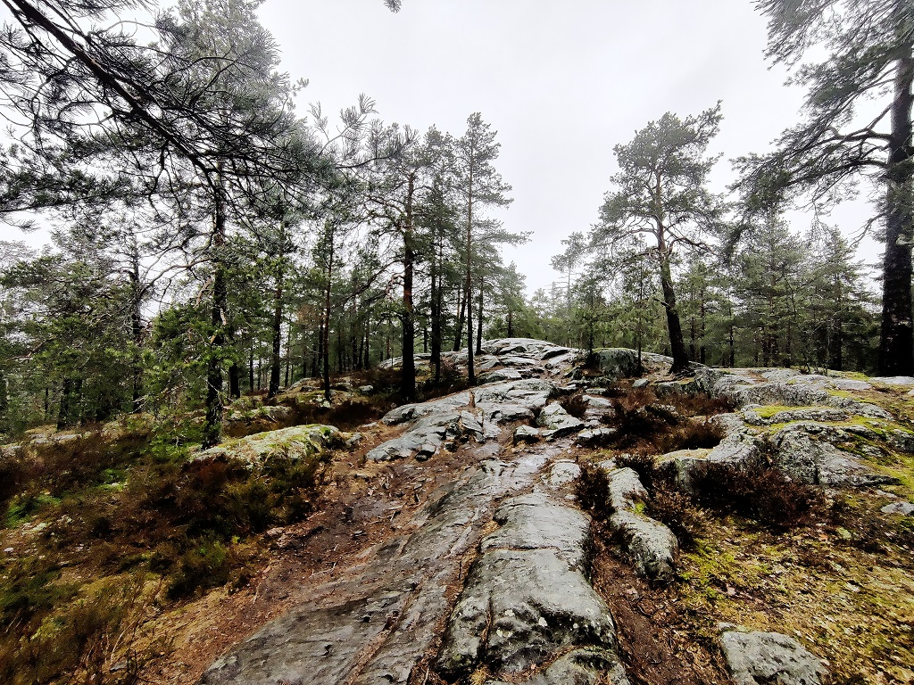
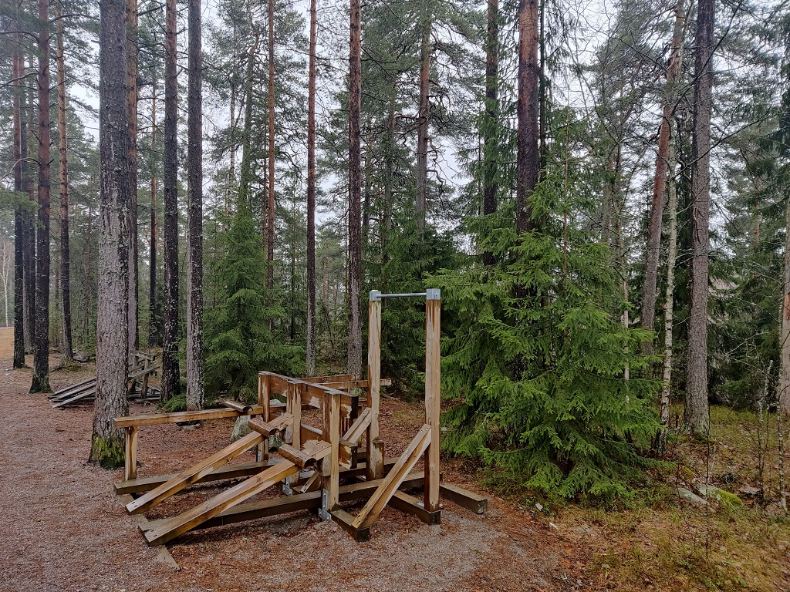
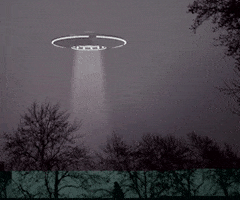

Mehässä on mukavaa kävellä ja siellä on monenlaisia olentoja kuten dinosauruksia. Liikkuminen metsässä virkistää kehon ja mielen, varsinkin kun sataa rakeita.
Suomessa on paljon julkisia metsiä, joissa kuka tahansa saa kävellä. Varokaa kuitenkin "niitä".
Kuntoilulaite mehässä
Mehässä voi myös kuntoilla.
Zeta-Reticulilaisten ajoneuvo etsimässä parkkipaikkaa Laurean kampuksen takana 13.4.2021 klo 23:23
Osa sivuston tiedosta on fiktiivistä. Njappe oli oikea taistelukala. In case of copyright infringement, contact me via email.